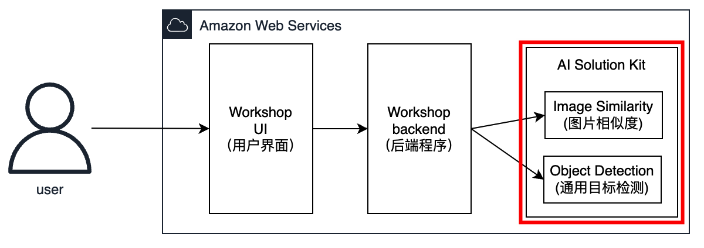
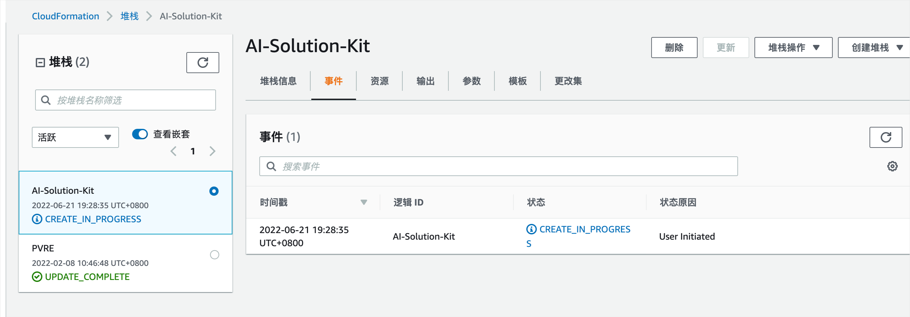
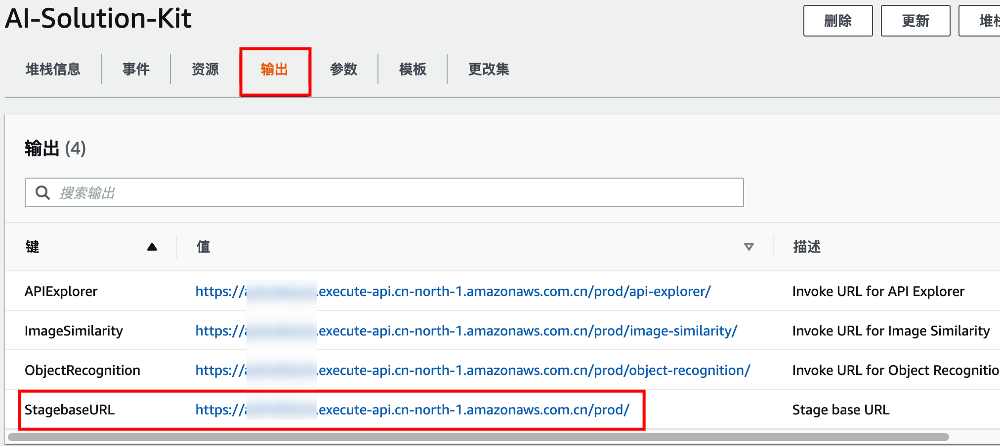
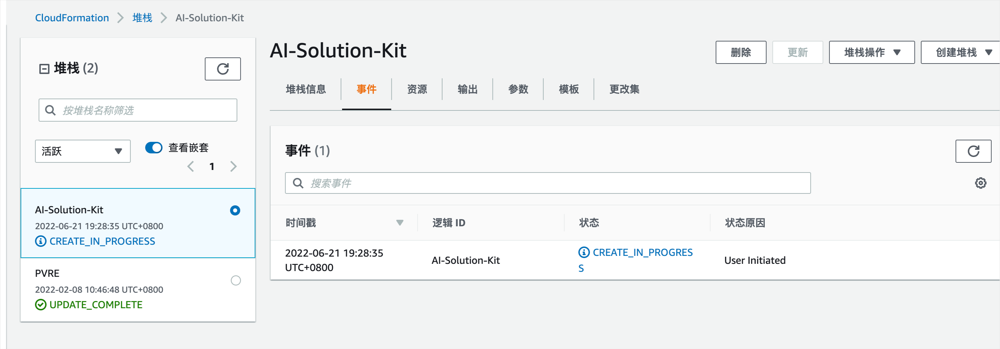
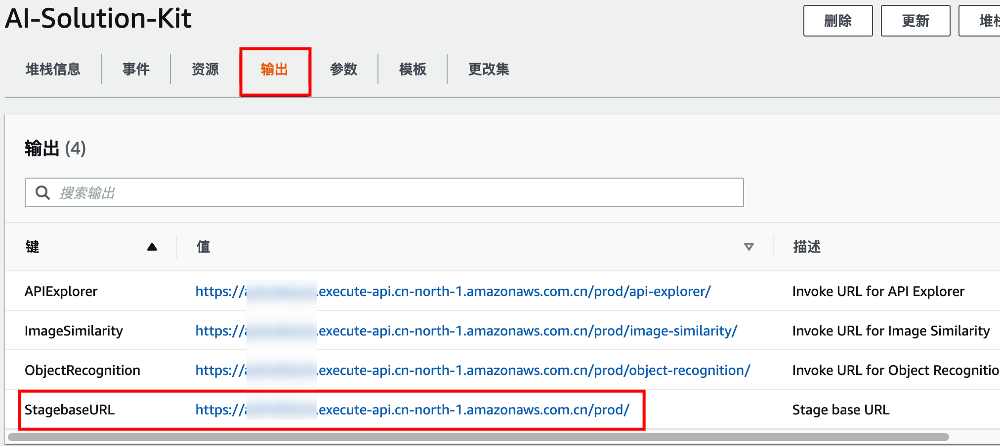

4.1 部署AI Solution Kit
 登陆亚马逊云科技控制台中国区域或全球区域， 点击下表中的链接进入CloudFormation部署页面。
| 区域 | 10GB版本(生产环境使用，速度快) | 3GB版本(适用未提升lambda限额) |
|---|---|---|
| 中国 | 部署中国区域10GB版本 | 部署中国区域3GB版本 |
| 全球 | 部署全球区域10GB版本 | 部署全球区域3GB版本 |
在页面底部右下角选择下一步。
 在指定堆栈详细信息页面的参数部分对API的部署进行配置。把图片相似度（Image Similarity）和对象检测（Object Recognition）的参数设置为“yes”，其他保持默认不变，在页面底部右下角选择下一步。
在指定堆栈详细信息页面的参数部分对API的部署进行配置。把图片相似度（Image Similarity）和对象检测（Object Recognition）的参数设置为“yes”，其他保持默认不变，在页面底部右下角选择下一步。
 在配置堆栈选项页面，选择保留已成功预置的资源，其他保持默认，在页面底部右下角选择下一步。
在配置堆栈选项页面，选择保留已成功预置的资源，其他保持默认，在页面底部右下角选择下一步。
 在审核页面，查看并确认设置。在页面底部，确保选中确认模板将创建Amazon Identity and Access Management（IAM）资源的复选框。并确保选中Amazon CloudFormation需要的其它功能的复选框。选择右下角橙色创建堆栈按钮。
在审核页面，查看并确认设置。在页面底部，确保选中确认模板将创建Amazon Identity and Access Management（IAM）资源的复选框。并确保选中Amazon CloudFormation需要的其它功能的复选框。选择右下角橙色创建堆栈按钮。
 整个堆栈的创建过程预计将花费大约五分钟。可以在CloudFormation控制台的状态列中查看堆栈的状态。创建完成后即可看到状态为CREATE_COMPLETE。

堆栈创建成功后，您可以在AI Solution Kit的堆栈输出（Outputs）标签页中通过对应键查看基于Amazon API Gateway的调用URL。记录下StagebaseURL的值，后续实验会使用

整个堆栈的创建过程预计将花费大约五分钟。可以在CloudFormation控制台的状态列中查看堆栈的状态。创建完成后即可看到状态为CREATE_COMPLETE。

堆栈创建成功后，您可以在AI Solution Kit的堆栈输出（Outputs）标签页中通过对应键查看基于Amazon API Gateway的调用URL。记录下StagebaseURL的值，后续实验会使用
